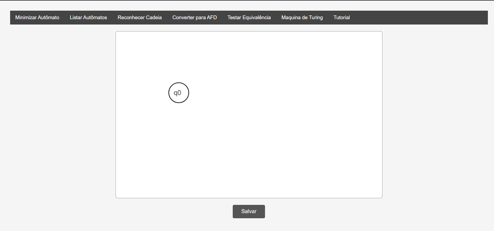
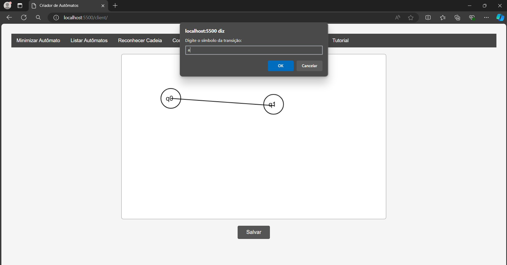
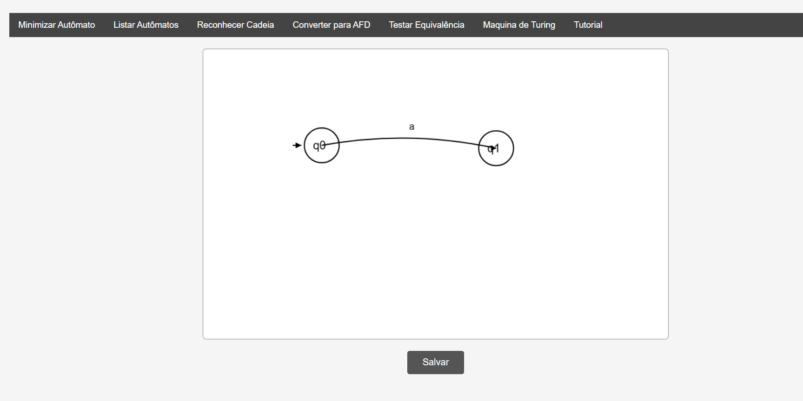
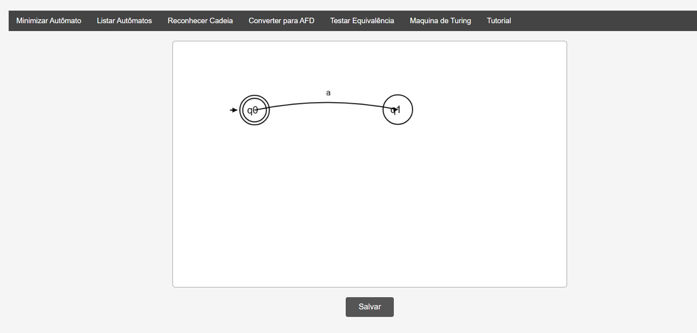
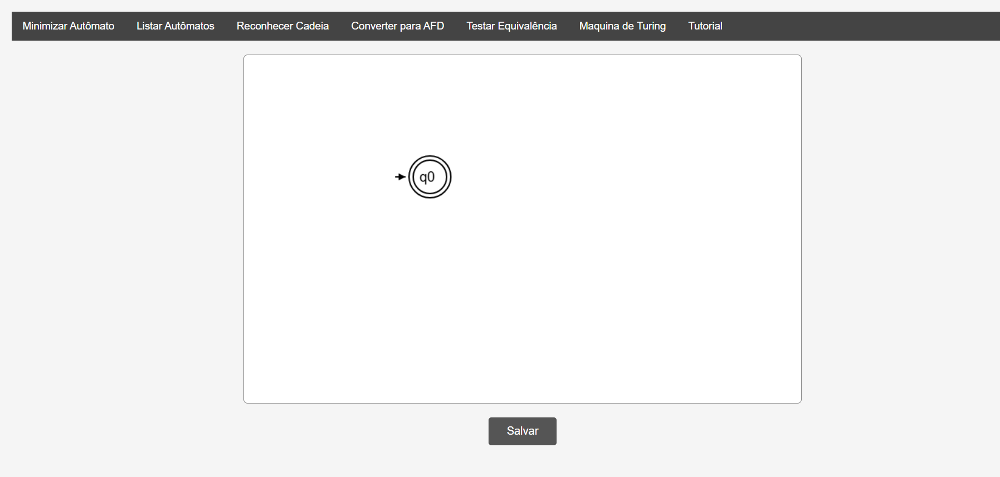

Para criar um novo estado no seu autômato, você pode apenas precisa clicar duas vezes com o botão esquerdo do mouse em qualquer lugar do quadro, o qual chamaremos de canvas daqui para frente.
Para criar uma transição entre dois estados, segure e arraste com o botão direito do mouse de um estado para outro, após uma janela de contexto irá aparecer, basta digitar a letra correspondente a transição.
Para definir um estado como inicial, segure a tecla Ctrl e clique com o botão esquerdo no estado desejado.
Para definir um estado como final, segure a tecla Ctrl e clique com o botão direito no estado desejado.
Para apagar um estado, clique nele com o botão esquerdo do mouse enquanto segura a tecla Space. O cursor irá mudar pra um símbolo de cruz.
